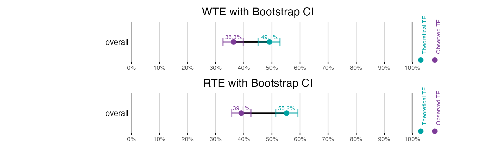
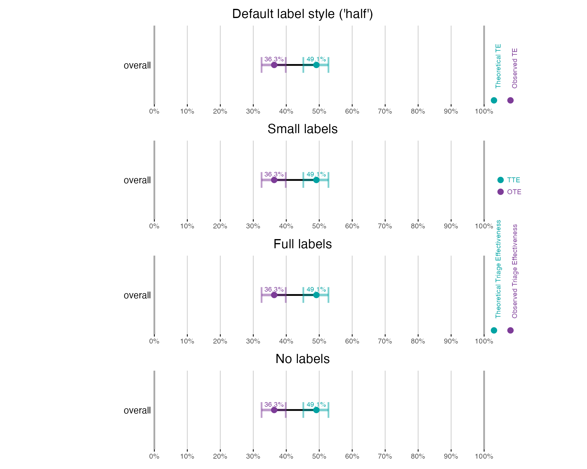
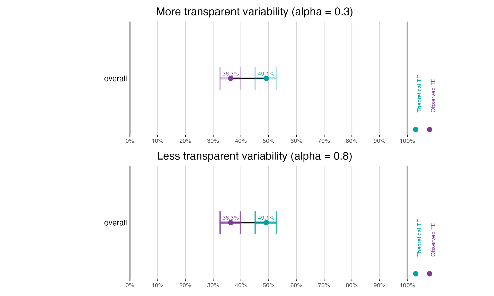

library(trieff)
#> Loaded trieff 1.2.0
library(dplyr)
#>
#> Attaching package: 'dplyr'
#> The following objects are masked from 'package:stats':
#>
#> filter, lag
#> The following objects are masked from 'package:base':
#>
#> intersect, setdiff, setequal, union
library(patchwork)
# Initialize and simulate data once at the start
data <- load_sem_synth() %>%
init() %>%
sim_te()
#> [1] "Filtered to 1044 segments with LOSET cases"
#> [1] "Total LOSET cases: 3843"
#> [1] "Starting multisession with 1 cores. 2025-06-12 12:44:23.888303"
#> [1] "Simulations are done! 2025-06-12 12:44:26.950253"Introduction
The plot_te() function provides flexible visualization
of Triage Effectiveness results. This vignette demonstrates how to
create and customize these visualizations for both Waiting Time-based TE
(WTE) and Rank-based TE (RTE) calculations.
Prerequisites
- Calculated TE metrics using
calc_wte()orcalc_rte()(seevignette("calc_wte_rte")) - Optional: Bootstrap results for confidence intervals (see
vignette("bootstrap"))
Understanding TE Visualization Methods
Before diving into examples, it’s important to understand the two complementary approaches to measuring and visualizing Triage Effectiveness:
Waiting Time-based TE (WTE): Measures how well triage reduces the actual waiting time for time-critical patients.
Rank-based TE (RTE): Evaluates how effectively triage improves queue positions for time-critical patients.
Both approaches have their strengths and different confidence interval calculation methods, which will be demonstrated throughout this vignette.
Basic Plotting
Let’s start with basic plots for both WTE and RTE:
# Calculate WTE metrics
wte_results <- calc_wte(data, overall_only = TRUE)
# Calculate RTE metrics
rte_results <- calc_rte(data, overall_only = TRUE)
#> [1] "Processing 2 units with LOSET cases in parallel 2025-06-12 12:44:27.678805"
#> [1] "Processing unit: C 2025-06-12 12:44:28.516703"
#> [1] "Processing unit: E 2025-06-12 12:44:29.352859"
# Create basic plots
wte_plot <- plot_te(wte_results, title = "Waiting Time-based TE (WTE)")
rte_plot <- plot_te(rte_results, title = "Rank-based TE (RTE)", ci_vars_override = "none")
# Display plots
wte_plot / rte_plotBy default, the plots show both Theoretical TE (teal) and Observed TE (purple) values. The horizontal lines connecting these points represent the Observed-Theoretical Gap (OTG).
Confidence Interval Types
The plot_te() function offers several options for
displaying confidence intervals using the ci_vars_override
parameter. This is particularly important when working with RTE, as
queue positions often have non-normal distributions.
The available confidence interval types are:
- Parametric: Based on normal distribution assumptions (t-distribution)
- Non-parametric: Based on quantiles of the actual distribution
- Bootstrap: Derived from bootstrap resampling
- None: No confidence intervals displayed
Let’s see how these different CI types affect our visualizations:
# Calculate RTE with all CI types available
rte_boot <- calc_rte(data, bootstrap = TRUE, overall_only = TRUE)
#> [1] "Processing 2 units with LOSET cases in parallel 2025-06-12 12:44:30.383885"
#> [1] "Processing unit: C 2025-06-12 12:44:31.22316"
#> [1] "Processing unit: E 2025-06-12 12:44:32.035701"
#> [1] "Starting RTE bootstrap with 2000 iterations, sample size 3529 from 3529 valid time-critical patients at 2025-06-12 12:44:32.801385"
#> [1] "RTE bootstrap completed at 2025-06-12 12:44:51.880389"
# Create plots with different CI types
plot1 <- plot_te(rte_boot, ci_vars_override = "parametric",
title = "RTE with Parametric CI")
plot2 <- plot_te(rte_boot, ci_vars_override = "nonparametric",
title = "RTE with Non-parametric CI")
plot3 <- plot_te(rte_boot, ci_vars_override = "boot",
title = "RTE with Bootstrap CI")
plot4 <- plot_te(rte_boot, ci_vars_override = "none",
title = "RTE with No CI")
# Display plots
(plot1 / plot2) | (plot3 / plot4)Note how the non-parametric confidence intervals are often wider than parametric ones for RTE due to the non-normal distribution of queue positions. For most analyses, bootstrap confidence intervals provide a good balance of validity and interpretability.
Automatic CI Selection
The plot_te() function intelligently selects the most
appropriate confidence interval type based on a priority order:
- User-specified override via
ci_vars_overrideparameter - Bootstrap results (if available)
- Recommended CIs based on calculation method and normality tests:
- For RTE: based on Shapiro-Wilk test results
- For WTE: bootstrap CIs are recommended when available
- None (if no other options are available)
This automatic selection ensures appropriate uncertainty representation without requiring manual specification in most cases.
Bootstrap Confidence Intervals
Bootstrap confidence intervals are available for both WTE and RTE
when calculated with the bootstrap = TRUE parameter:
# Calculate TE with bootstrap for both methods
wte_bootstrap <- calc_wte(data, bootstrap = TRUE, overall_only = TRUE)
#> [1] "Starting bootstrap iterations 2025-06-12 12:44:53.138001"
#> [1] "Bootstrap iterations done 2025-06-12 12:45:07.951511"
rte_bootstrap <- calc_rte(data, bootstrap = TRUE, overall_only = TRUE)
#> [1] "Processing 2 units with LOSET cases in parallel 2025-06-12 12:45:08.593876"
#> [1] "Processing unit: C 2025-06-12 12:45:09.502313"
#> [1] "Processing unit: E 2025-06-12 12:45:10.361449"
#> [1] "Starting RTE bootstrap with 2000 iterations, sample size 3529 from 3529 valid time-critical patients at 2025-06-12 12:45:11.150205"
#> [1] "RTE bootstrap completed at 2025-06-12 12:45:29.914938"
# Plot with bootstrap confidence intervals
wte_boot_plot <- plot_te(wte_bootstrap, title = "WTE with Bootstrap CI")
rte_boot_plot <- plot_te(rte_bootstrap, title = "RTE with Bootstrap CI")
# Display plots
wte_boot_plot / rte_boot_plot
Subgroup Analysis
Both WTE and RTE support subgroup analysis. Let’s create age groups and visualize TE patterns:
# Create age groups
data <- data %>%
mutate(age_group = cut(age_at_arrival,
breaks = c(0, 59, 79, Inf),
labels = c("18-59", "60-79", "80+")))
# Calculate and plot TE by age group
wte_age <- calc_wte(data, var1 = "age_group", bootstrap = TRUE, overall_only = TRUE)
#> [1] "Starting bootstrap iterations 2025-06-12 12:45:30.830229"
#> [1] "Bootstrap iterations done 2025-06-12 12:45:46.327043"
rte_age <- calc_rte(data, var1 = "age_group", bootstrap = TRUE, overall_only = TRUE)
#> [1] "Processing 2 units with LOSET cases in parallel 2025-06-12 12:45:47.08898"
#> [1] "Processing unit: C 2025-06-12 12:45:47.979481"
#> [1] "Processing unit: E 2025-06-12 12:45:48.865312"
#> [1] "Starting RTE bootstrap with 2000 iterations, sample size 3529 from 3529 valid time-critical patients at 2025-06-12 12:45:49.713755"
#> [1] "RTE bootstrap completed at 2025-06-12 12:46:09.612823"
# Create plots
wte_age_plot <- plot_te(wte_age, title = "WTE by Age Group")
rte_age_plot <- plot_te(rte_age, title = "RTE by Age Group")
# Display plots
wte_age_plot / rte_age_plotAdvanced Plot Customization
The plot_te() function offers several customization
options to tailor visualizations to specific needs. Let’s explore how
different parameters affect the appearance:
# Base plot for comparison
base_plot <- plot_te(wte_bootstrap, title = "Default label style ('half')")
# Different label styles
small_labels <- plot_te(wte_bootstrap,
label_style = "small",
title = "Small labels")
full_labels <- plot_te(wte_bootstrap,
label_style = "full",
title = "Full labels")
no_labels <- plot_te(wte_bootstrap,
label_style = "none",
title = "No labels")
# Display label style variations
base_plot / small_labels / full_labels / no_labels
# Variability display options
more_transparent <- plot_te(wte_bootstrap,
var_alpha = 0.3,
title = "More transparent variability (alpha = 0.3)")
less_transparent <- plot_te(wte_bootstrap,
var_alpha = 0.8,
title = "Less transparent variability (alpha = 0.8)")
# Display variability transparency variations
more_transparent / less_transparent
# Line width options
thin_lines <- plot_te(wte_bootstrap,
dumbell_width = 0.5,
var_width = 0.8,
var_end_width = 0.5,
title = "Thinner lines")
thick_lines <- plot_te(wte_bootstrap,
dumbell_width = 2,
var_width = 2.5,
var_end_width = 1.5,
title = "Thicker lines")
# Display line width variations
thin_lines / thick_lines
# Selective display of metrics
tte_only <- plot_te(wte_bootstrap,
show_tte = TRUE,
show_ote = FALSE,
title = "TTE only")
ote_only <- plot_te(wte_bootstrap,
show_tte = FALSE,
show_ote = TRUE,
title = "OTE only")
# Display selective metrics
tte_only / ote_onlyKey customization parameters include:
-
var_alpha: Controls transparency of variability intervals (0-1) -
dumbell_width: Width of lines connecting TTE and OTE points -
var_width: Width of variability interval main lines -
var_end_width: Width of variability interval end caps -
var_end_height: Height of variability interval end caps -
label_style: Can be “none”, “small”, “full”, or “half” (default) -
show_tte/show_ote: Toggle display of specific metrics -
show_var: Toggle display of variability intervals -
ci_vars_override: Control which confidence interval type to display
For more details on available parameters, see
?plot_te.
Summary
This vignette has demonstrated how to:
- Create basic TE plots for both WTE and RTE
- Understand and control confidence interval types
- Visualize bootstrap confidence intervals
- Handle subgroup analyses
- Deal with negative TE values
- Customize plot appearance
For more complex analyses, consider combining these visualization
techniques with the methods described in the calc_wte_rte
and bootstrap vignettes.